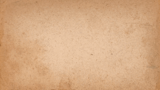

Squash and Stretch
첫 번째 법칙은 스쿼시(Squash)와 스트레치(Stretch)입니다. 이 법칙은 사물의 속도, 탄력, 무게, 재질감을 강조하기 위해 물체를 늘리거나 납작하게 만드는 애니메이팅 기법입니다.
기본 움직임
아래의 GIF는 물체가 스쿼시와 스트레치 법칙에 따라 움직이는 기본적인 예제를 보여줍니다. 이 원리는 공이 바닥에 충돌할 때 납작해지고, 다시 튀어오를 때 늘어나는 효과를 나타냅니다.

공의 기본 움직임
탄력성에 따른 움직임
물체의 탄력성은 스쿼시와 스트레치의 강도에 영향을 미칩니다. 아래의 GIF는 더 높은 탄력을 가진 공과 낮은 탄력을 가진 공의 움직임 차이를 보여줍니다.
탄력성에 따른 움직임
재질에 따른 움직임
공의 재질에 따라 스쿼시와 스트레치가 다르게 나타납니다. 예를 들어, 고무 공은 더 많이 찌그러지고 늘어나지만, 금속 공은 거의 변형되지 않습니다.
재질에 따른 움직임
고급 동작 예제
아래의 예제들은 스쿼시와 스트레치가 다양한 환경에서 어떻게 적용되는지를 보여줍니다. 이 원리를 이해하면 더 생동감 있는 애니메이션을 만들 수 있습니다.
고급 예제 1
고급 예제 2